⚙ SEE IT · EXPLAIN IT · REMEMBER IT
The visual memory workshop
18 original memory illustrations for NUR 234, NUR 235 and NUR 258. Rustic robots, labeled objects and one concept at a time.
Study the objects → say the symbol key out loud → hide the picture → answer the recall question.
18 memory aids
No matching topic. Try another word or choose all courses.
 NUR 234 · Module 2Fetal circulation: three detoursExplore + test recall →
NUR 234 · Module 2Fetal circulation: three detoursExplore + test recall →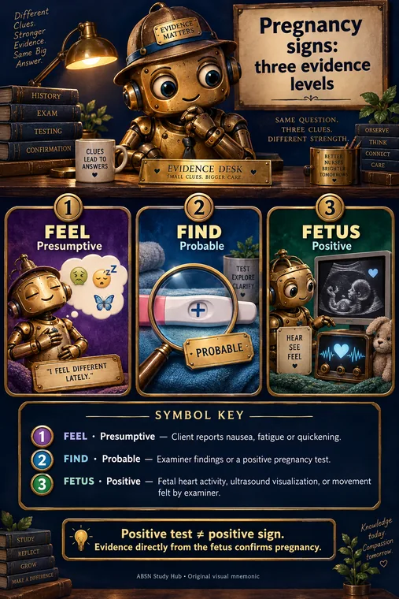
NUR 234 · Module 3Pregnancy signs: three evidence levelsExplore + test recall → NUR 234 · Module 7Fetal monitoring: VEAL–CHOPExplore + test recall →
NUR 234 · Module 7Fetal monitoring: VEAL–CHOPExplore + test recall →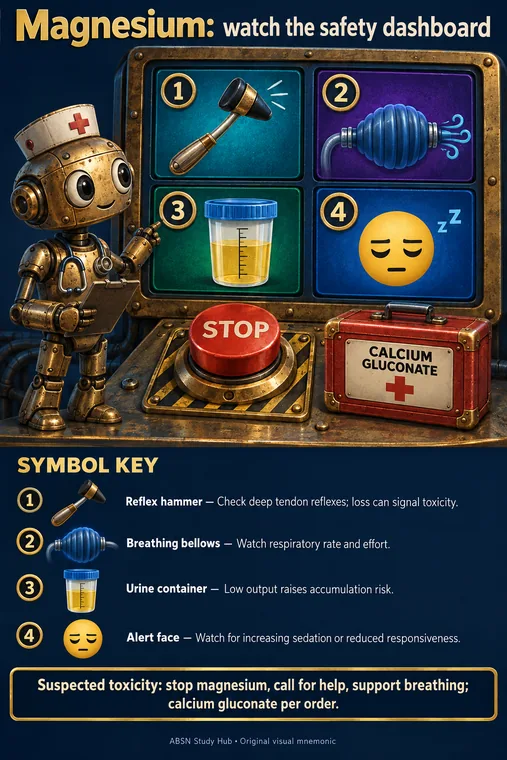
NUR 234 · Module 9Magnesium: watch the safety dashboardExplore + test recall →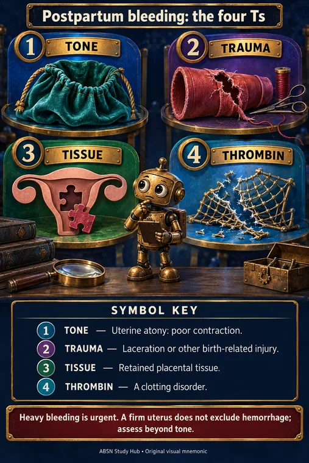
NUR 234 · Module 11Postpartum bleeding: the four TsExplore + test recall →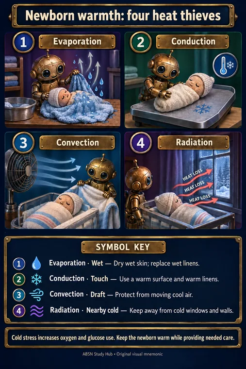
NUR 234 · Module 12Newborn warmth: four heat thievesExplore + test recall →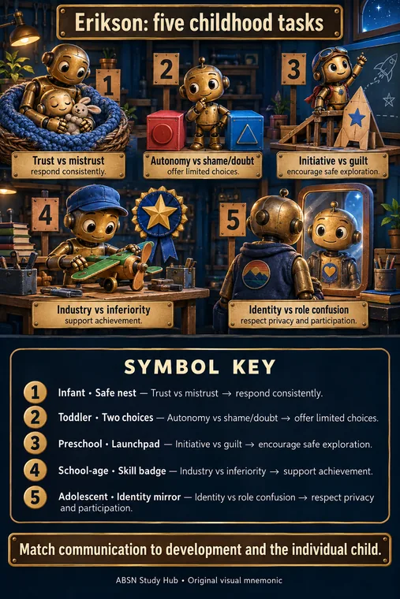
NUR 235 · Module 1Erikson: five childhood tasksExplore + test recall →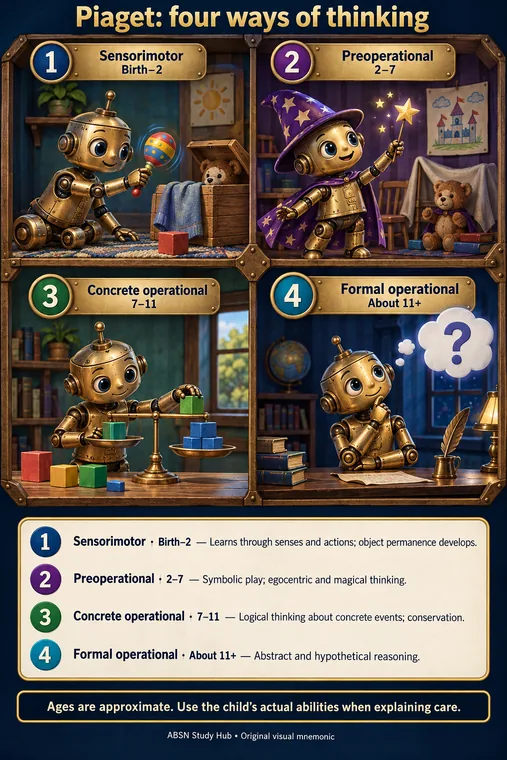
NUR 235 · Module 1Piaget: four ways of thinkingExplore + test recall →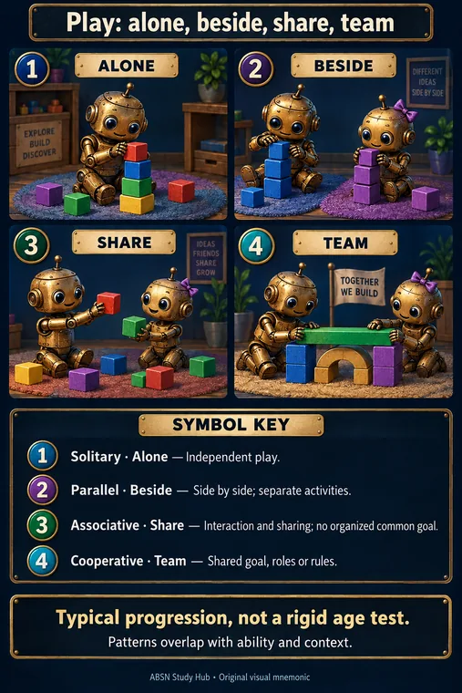
NUR 235 · Module 3Play: alone, beside, share, teamExplore + test recall →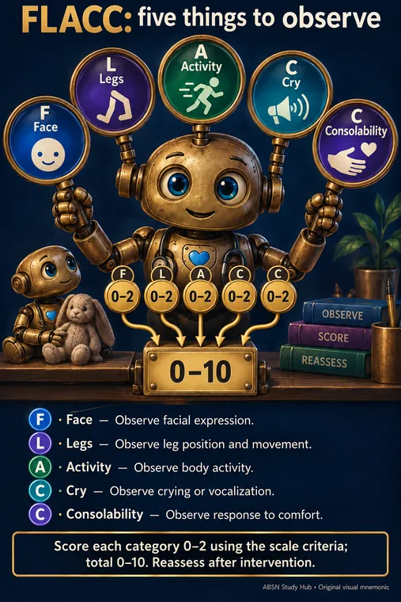
NUR 235 · Module 1FLACC: five things to observeExplore + test recall →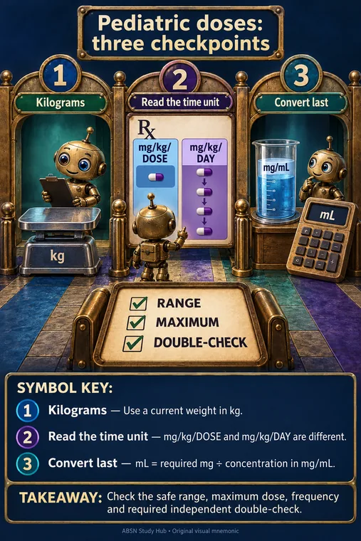
NUR 235 · Module 1Pediatric doses: three checkpointsExplore + test recall →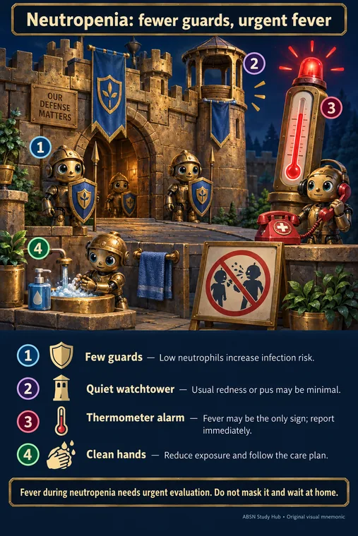
NUR 235 · Module 5Neutropenia: fewer guards, urgent feverExplore + test recall →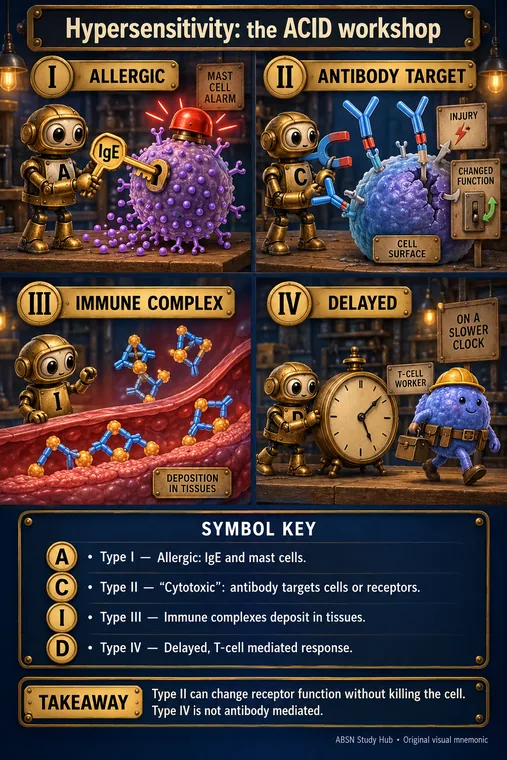
NUR 258 · Module 3Hypersensitivity: the ACID workshopExplore + test recall →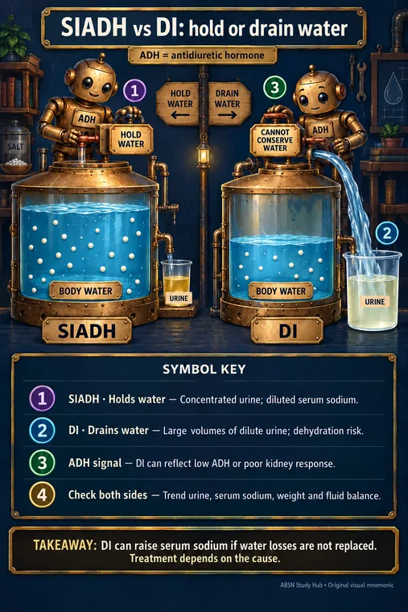
NUR 258 · Module 5SIADH vs DI: hold or drain waterExplore + test recall →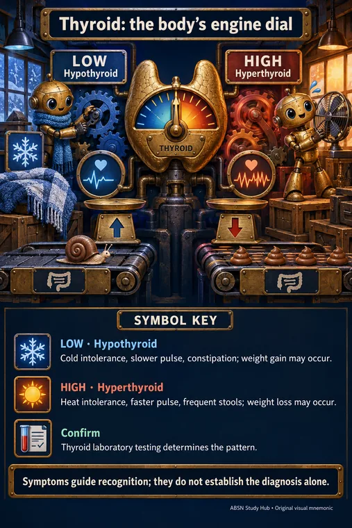
NUR 258 · Module 5Thyroid: the body’s engine dialExplore + test recall → NUR 258 · Module 7CPP: pressure in minus pressure againstExplore + test recall →
NUR 258 · Module 7CPP: pressure in minus pressure againstExplore + test recall → NUR 258 · Module 8Autonomic dysreflexia: alarm above the blockExplore + test recall →
NUR 258 · Module 8Autonomic dysreflexia: alarm above the blockExplore + test recall →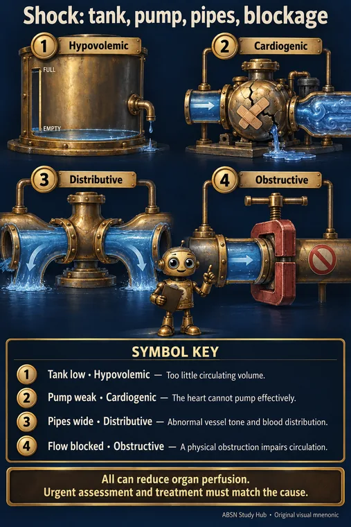
NUR 258 · Module 13Shock: tank, pump, pipes, blockageExplore + test recall →Why these topics?
These pictures focus on look-alike terms, opposing patterns and sequences that benefit from a memorable visual. The existing pediatric disease library supplies the disease-by-disease illustrations; this set adds targeted recall aids.
The full course material stays in each module. Each picture links back to its course page.